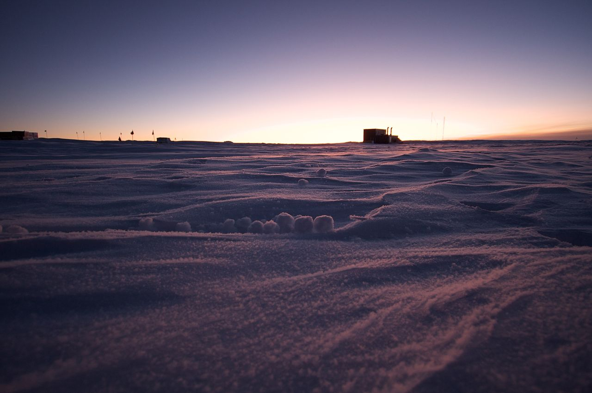

Yukimarimo are balls of fine frost formed at low temperatures on the Antarctic plateau during weak wind conditions. Yukimarimo were discovered in 1995 at Dome F by the 36th Japanese Antarctic Research Expedition (JARE-36) at temperatures of –59 to –72 °C. Electrostatic attraction between ice crystals explains the formation of yukimarimo at these low temperatures
During a storm on the Antarctic plateau, humidity rises above normal levels. After a storm, the temperature drops rapidly and, due to the excess humidity, hoarfrost forms on the surface of the snow. At these low temperatures, electrostatic attraction between the rapidly formed ice crystals is high, due to growth charging during formation. When a light wind blows after the formation of this hoarfrost, the hoarfrost breaks apart and the frost crystals clump together and stick due to the high electrostatic attraction and subsequent fusing of the ice crystals. They then tumble across the snow in a manner similar to tumbleweed. The sizes of the yukimarimo range from a few millimeters to several centimeters in diameter.[Ref 1]
